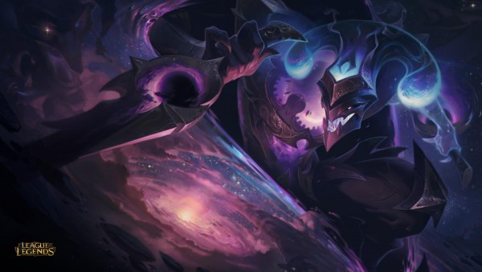
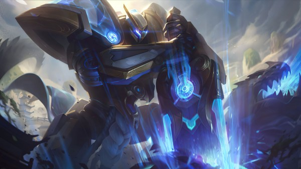

[Phá đảo Đấu Trường Chân Lý] Xây dựng đội hình siêu sát thương Cơ Giáp – Mật Thám
Đội hình thiên hướng tấn công cực mạnh thời điểm hiện tại
Nguyên tắc cốt lõi
Đi chợ nhặt được kiếm BF hoặc ra nhiều kiếm BF.
Ra nhiều tướng Mật Thám (Kai’sa, Shaco) hoặc Cơ Giáp.
Không nhà nào chơi.
Vận hành đội hình
Đầu game sử dựng các bộ khỏe như Tiên Phong hoặc Siêu Công Nghệ, có thể ghép luôn đồ của Shaco (Giáp hồi sinh – Vô Cực – Huyết Kiếm) để giữ máu. Hoặc có thể đánh Chuỗi thua để được nhặt đồ trước.
Tích tiền thật nhiều, không xoay hoặc nâng cấp sớm khi chưa đủ 50 vàng. Chỉ dùng tiền để bắt các tướng trong đội hình.
 Shaco là chủ lực của đội hình này với khả năng sốc sát thương cực mạnh
Ở cấp 6 sẽ vào có đội hình với 3 Cơ Giáp (Annie – Rumble – Fizz ) + 4 mật thám (Shaco – Kaisa – Kha'zix – Fizz), tiếp tục tích tiền để lên 7 và xoay bằng lợi tức để hoàn thiện các tướng 3 sao trong đội hình.
Nâng cấp 7 với 40 – 50 vàng, tập trung xoay để kiếm Shaco 3* và bổ sung thêm Karma vào đội hình, đồng thời thay Kha'zix bằng Ekko nếu có.
Nâng cấp độ 8 có thể bổ sung thêm Gangplank kích Bộc Phá, hoặc Lux kích Hắc Tinh/Pháp Sư đều được. Cuối trận dư tiền thì Nâng 9 bổ sung tướng còn lại, còn không thì đánh ở 8 và xoay nâng cấp cho GP.
 Garen có đủ 3 trang bị cần thiết sẽ là nỗi ác mộng thực sự
Một số lưu ý
Ưu tiên số 1 của bộ này là Shaco 3*. Có thể kiếm Annie hoặc Rumble lên 3* để Garen trâu hơn, tạo điều kiện cho Mật thám xử dàn sau dễ dàng. Kai'sa 3* cầm Quỷ Thư cũng là 1 nguồn sát thương rất mạnh trong đội hình này.
Lưu ý chỉ nên ghép 3 trang bị cho Cơ Giáp, vì Garen chỉ lấy 3 item nên ghép nhiều hơn sẽ không tận dụng hết. Item tốt nhất cho Garen là Áo choàng thủy ngân (khắc chế Phong Kiếm), Giáp Máu, Nỏ Sét, Quyền Năng Khổng Lồ
Nếu có Xẻng thì ghép Giáp Thiên Nhiên là tốt nhất, nếu không thì có thể ghép Mật Thám cho Irelia hoặc Bộc Phá cho Kaisa đều ngon.
Đặc điểm của team Mật Thám là nhảy vào hàng sau theo hướng đối diện. Nên phải canh sắp xếp Shaco cùng hướng với chủ lực đối phương, nhớ lưu ý kiểm tra Phong Kiếm để tránh bị lốc.